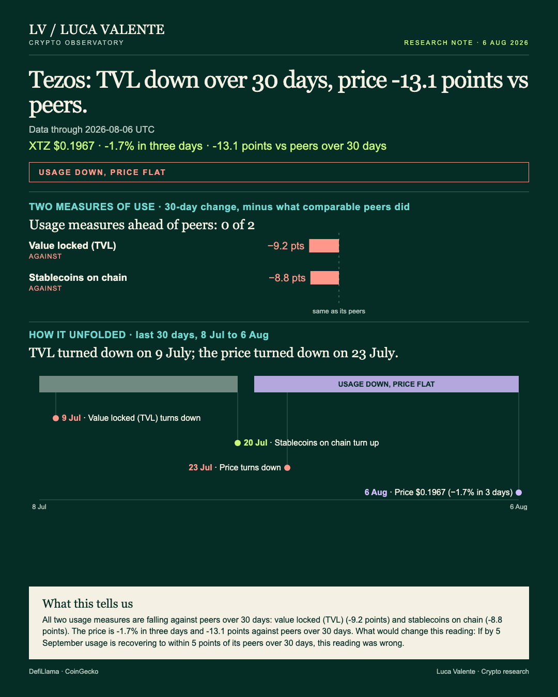
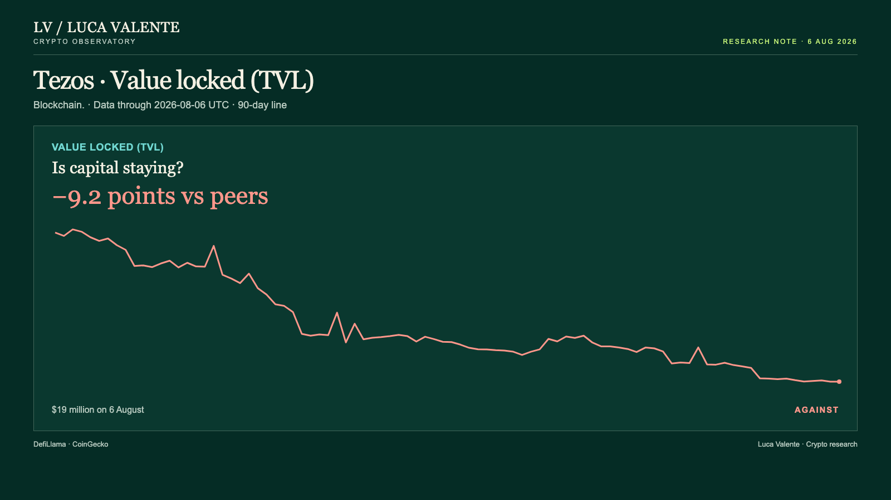

Training note, written on 23 September 2026 from data as of 6 August 2026. Not part of the published series.
Tezos's Usage Trails Peers. Its Price Barely Moved In Three Days.

August 6, and Tezos's usage lines are trailing peers while its price barely moves from day to day. This matters to anyone reading only the price chart: the chart is telling less than half the story.
Tezos is a standalone blockchain, one of the base-layer networks other apps build on, with its own token, XTZ. By 5 September one of two things has happened. Either usage has come back to its peers, or the price has gone on falling too. I am watching which. If by 5 September usage is recovering to within 5 points of its peers over 30 days, this reading was wrong.
Directly on Tezos, the dollar value parked in stablecoins comes to $49 million as of 6 August, up 0.1% versus a day earlier. Value locked, the money parked in Tezos's contracts, stood at $19 million the same day, flat at -0.0%.

Over 30 days, that stablecoin figure is down 11.0%. The median among the 31 of 36 blockchains that report it is -2.3%, a gap of -8.8 points. Value locked is down 15.8% over the same window. The median among the 36 blockchains in that group that report it is -6.7%, a gap of -9.2 points.
Thirty days ago, on 7 July, XTZ traded at $0.2489; by 6 August it was down 21.0%, to $0.1967. Against a median of -7.9% among the 32 blockchains in that group with a tracked price, that is a gap of -13.1 points. Day to day it moved less: down 0.6% across a day, and 1.7% across three.
Value locked was first to turn, on 9 July. That was 28 days before 6 August, and it fell on 21 of the following 29 days. The price turned later, on 23 July. That was 14 days before 6 August, and it has been down on 11 of the past 15 days since.
Not everything points the same way. That stablecoin balance has risen on 11 of the past 18 days since 20 July. Even so, the 30-day change stands at -11.0%, and it remains 8.8 points behind peers. A short run of up days does not undo a 30-day comparison against peers.
This data set has nothing on fees, trading volumes, L2 transaction counts or code commits for Tezos, and no way to count users or wallets: stablecoins and value locked are what this reading rests on. There is no news or announcement behind it, and nothing dated after 6 August is in front of me.
I'd want to see those stablecoin up-days turn into something bigger before calling this stabilized. For now, both usage lines sit behind peers, and the price has not caught up either way.
Sources: DefiLlama, CoinGecko.
Peer group: 36 chains tracked by DefiLlama (who they are). 'Net of the group' is the 30-day change minus the group's median.
Not financial advice. This is a research note based on public on-chain data.